TUTORIAL DE R.E.P.O.
Al iniciar el juego, el botón del tutorial estará resaltado. Entrar te dará una guía básica de controles y mecánicas. Algunos consejos aparecen solo en el momento, como texto sobre video en la parte inferior. Abajo están todos los videos del tutorial, incluso los que no están en el original.
Diseño del cuarto de tutorial
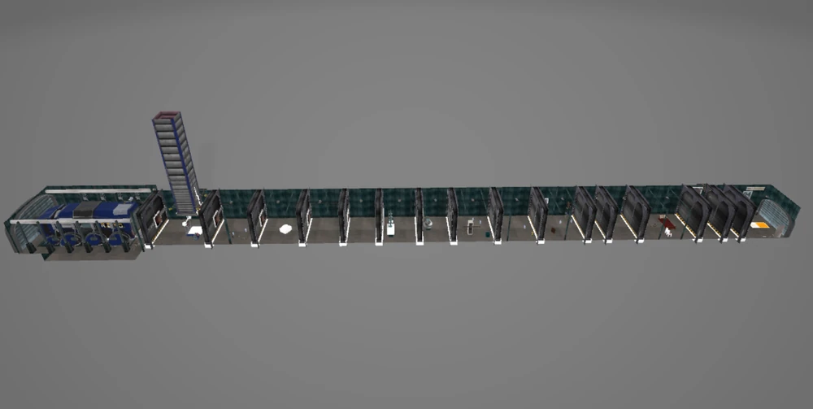
Carrito
Cómo se mueve y cómo cargarlo con objetos.
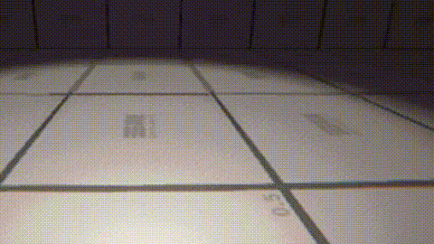 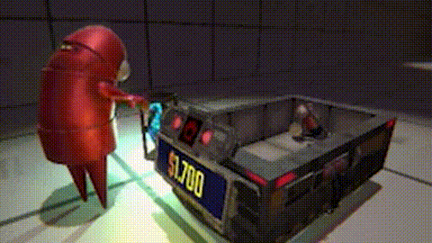Estación de carga
Muestra la estación funcionando.
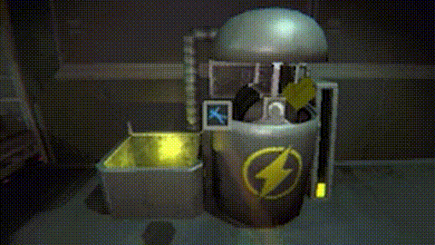Chat
Cómo se ve al escribir para uno mismo y para los demás.
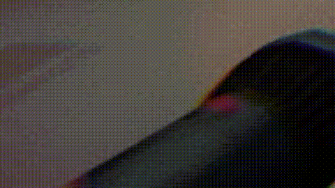Agacharse
Cómo se ve agacharse desde otros puntos de vista.
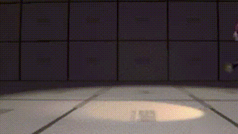Extracción
Tipos de extracción: bloqueada, única, múltiple, final.
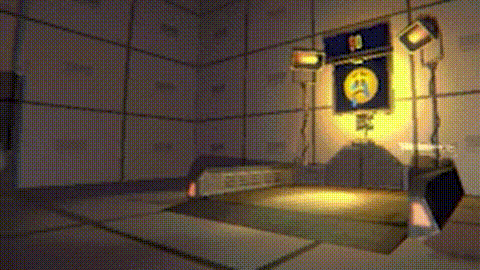 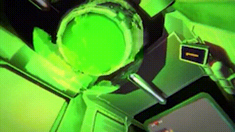 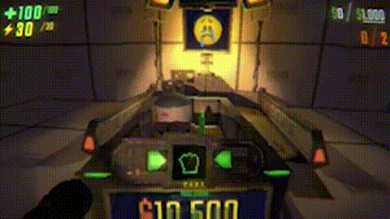 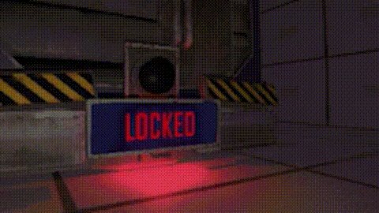Agarrar
Cómo se ve al tomar objetos.
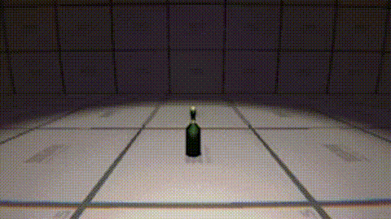Rotar objetos
Cómo se ve al girar un objeto.
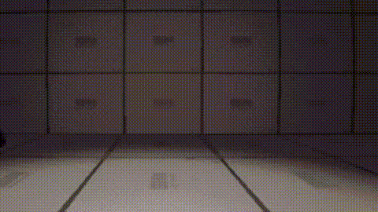Curar
Mecánica de curación en acción.
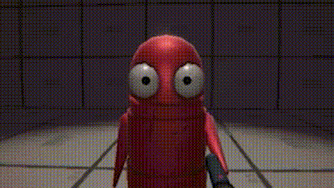Agacharse
Cómo se ve esconderse (o agacharse).
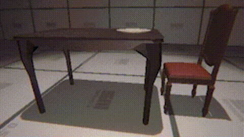Inventario
Cómo guardar objetos en el inventario.

Alternar objetos
Activar habilidades (como el dron).
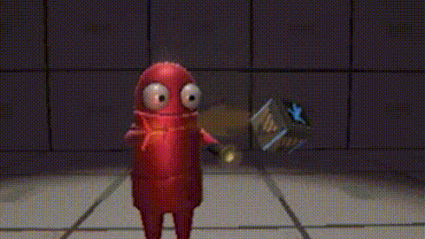Saltar
Cómo se ve al saltar (boing boing).
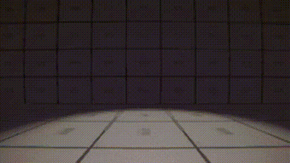Mapa
Cómo se muestra el mapa al jugador.
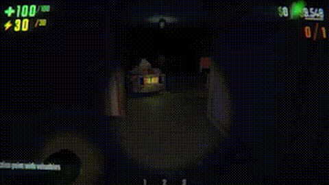Movimiento
Caminar, simplemente.
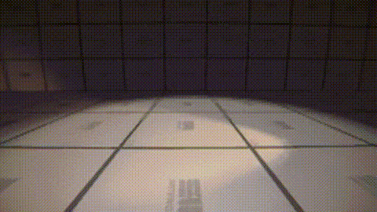Empujar y tirar
Acciones físicas sobre objetos.
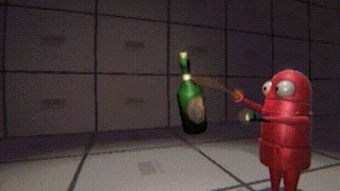Revivir
Cómo traer a un compañero de vuelta.

Tienda
Cómo comprar y molestar amigos en la tienda.
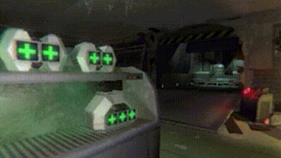Correr
Cómo se ve esprintar para los demás.
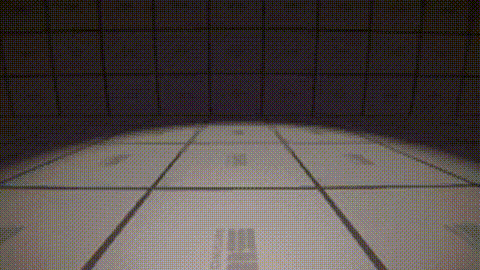Camión
Encender el camión como jugador.
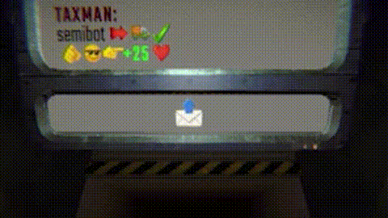Rodar
Animación de rodar desde otro punto de vista.
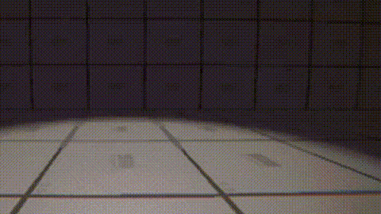